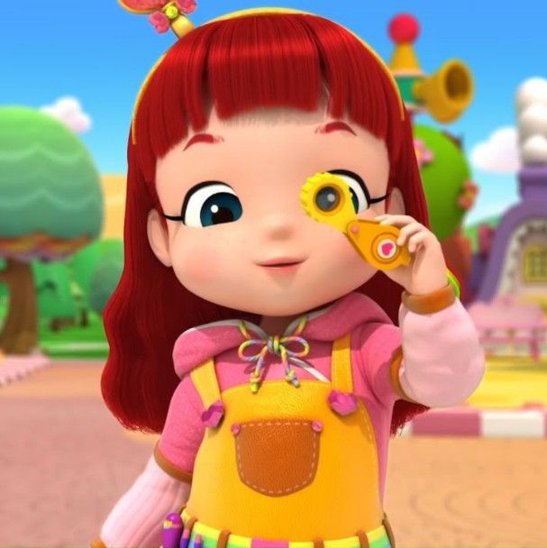
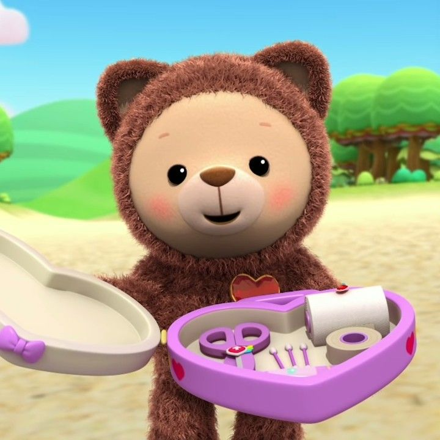
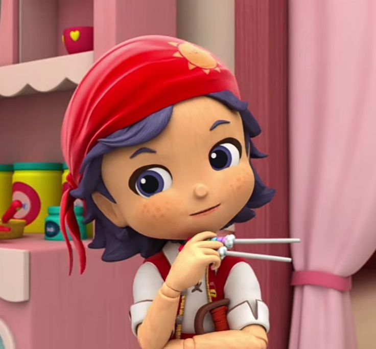
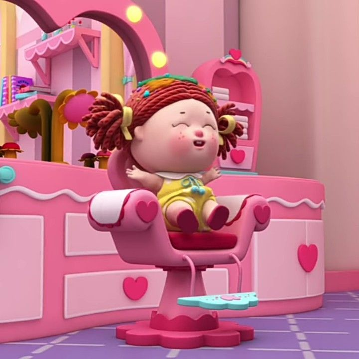
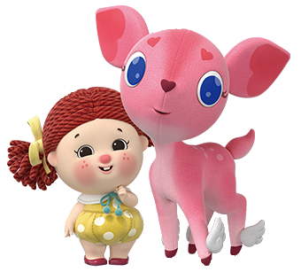
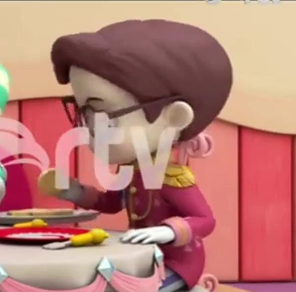
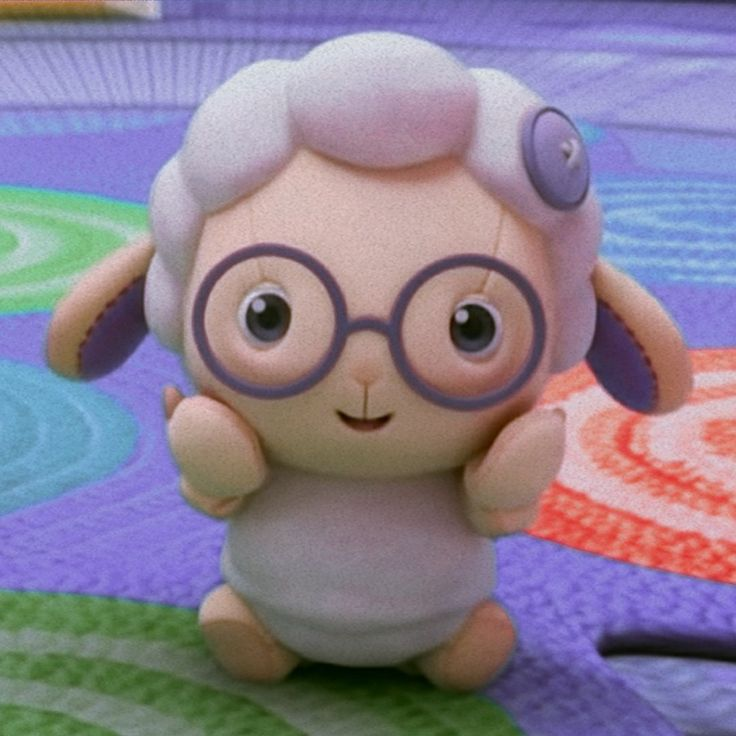
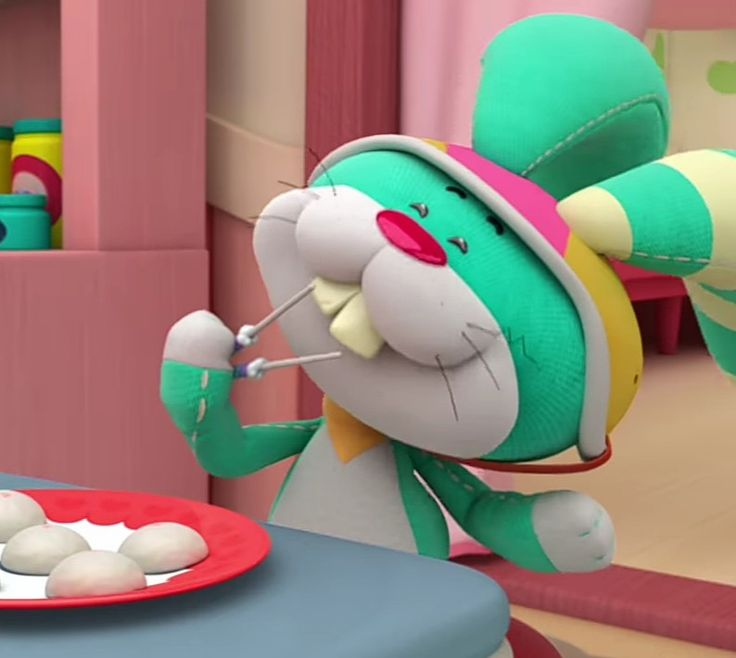
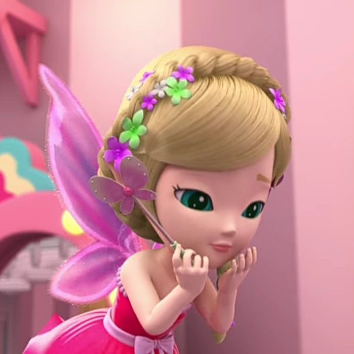
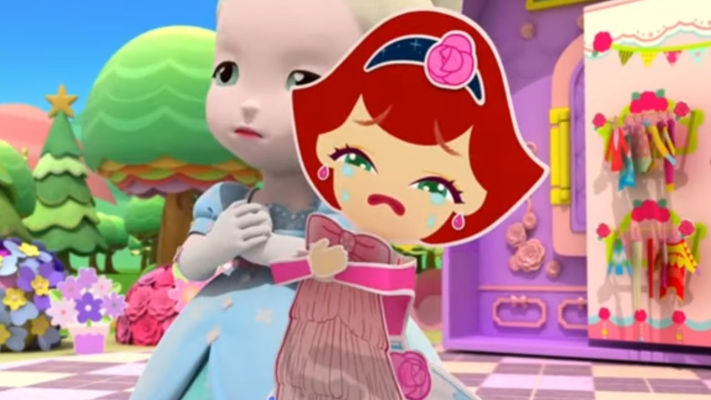

Home | Kartun Fav | Contact |
| Foto | Karakter | Lain nya |
|  | Rainbow ruby | adalah seorang gadis yang dapat berubah menjadi berbagai macam pekerjaan untuk membantu teman-teman mainannya dengan Rainbow Roller miliknya. Sering kali, dia dipanggil Ruby. |
|  | choco | adalah boneka beruang milik Rainbow Ruby |
|  | gina | adalah bajak laut boneka kayu |
|
|
wali kota ling ling | boneka gajah yang merupakan walikota Rainbow Village. |
|  | Jessy | adalah boneka bayi yang berkulit putih/persik, berambut merah dikuncir dua dengan mata cokelat, hidung merah muda, bintik-bintik, dan pipi kemerahan. Ia mengenakan dua pita kuning, kaus tank top kuning berkerah putih dan pita biru di lehernya, popok kuning berbintik-bintik putih, dan sandal merah muda. |
|
|
putri kiki | adalah putri boneka porselen muda yang manis . |
|  | daisy | adalah mainan mewah rusa berwarna merah muda. |
|  | Pangeran Frederick | adalah boneka porselen dan teman Putri Kiki. |
|  | Ellie | adalah boneka domba pecinta alam yang terkadang bersinar. |
|  | Thunderbell | adalah boneka kelinci yang bermain skuter. Ia bekerja sebagai tukang pos di kota itu. |
|  | Felicia | adalah boneka peri . |
|  | Paige | adalah boneka balerina kertas yang bergaya. |